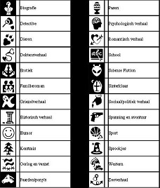

Welk Leesvoer Kies Je?
Je het geen verplichte leeslijst nodig, gooi die weg. Welke onderwerpen vind jij zelf leuk? Hou je van informatie en iets nieuws leren? Zoek dan je favoriete onderwerpen bij non-fictie. Lees je graag stripverhalen? Ook stripboeken horen bij lezen! Je hoeft niet per se een zwaar (letterlijk en figuurlijk) boek te lezen of naar een bijeenkomst waar zelfbenoemde dichters dramatisch alle symbolische kanten van een wimper belichten.
Zelf lees ik graag gemengde genres, zoals historische detectives. Alan Bradley heeft een hele serie gemaakt over Flavia de Luce. Er zit humor in, mysterie, geschiedenis en natuurlijk zijn er goede personages. Als je van spanning en humor houdt en je vindt het niet erg dat het verhaal zich afspeelt in een tijd dat nog bijna niemand een televisietoestel had, is deze serie een aanrader. Je kunt deze boeken ook afzonderlijk lezen.

Wanneer ik echt wil lachen, dan is werk van David Sedaris perfect. Lees zijn boek Van Je Familie Moet Je Het Hebben. Zorg dat je niet iets eet of drinkt bij het lezen, want je zult steeds hardop proesten.
Wat Als Je Toch Naar Boeken Begint Te Stinken?
Dat is zo'n ramp niet. Geld stinkt ook en daar klaagt niemand over. Mocht het zover komen, dan herkennen andere boekenwurmen en jij elkaar gemakkelijk. Het is heel gezellig samen, wanneer ze eens per jaar besluiten te praten in plaats van te lezen.
Boekenwurmen doffen zich graag op voor deze gelegenheid en oefenen vast hun stembanden. Op het jaarlijkse Boekenbal is er muziek en dans (niet per se in die volgorde) en het is er zo gezellig, dat er ook mensen komen die niet van boeken houden. Zo is dit een feest voor iedereen.
Mocht je niet een heel jaar willen wachten met kletsen, dan kun je altijd terecht op dit forum waar iedereen het alleen maar over boeken heeft: Ezzulia.
En anders mag je mij ook best een bericht sturen.